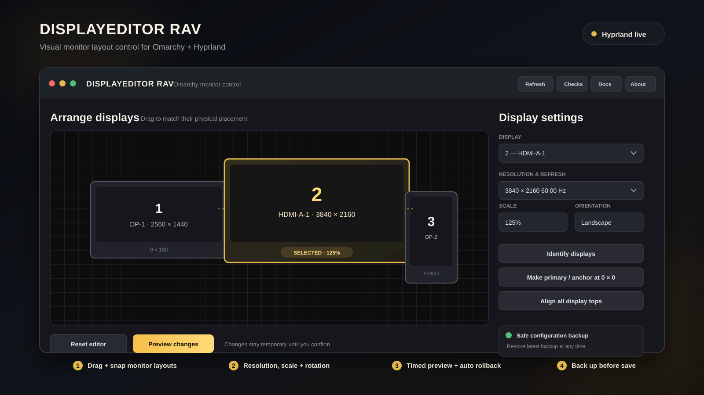

See the real layout
Starts from hyprctl monitors all -j, so connected displays, modes, scale, and position reflect the live session.
Omarchy shell plugin · Hyprland utility
DisplayeditorRav turns a monitor layout into a visual, reversible workflow: drag displays into place, preview the complete arrangement, then save only after you confirm it works.

Designed for recovery
Starts from hyprctl monitors all -j, so connected displays, modes, scale, and position reflect the live session.
Move proportional display cards with edge snapping, then tune resolution, refresh rate, scale, orientation, and logical coordinates.
Applies the complete layout as a temporary preview and arms an independent watchdog to restore the original setup if confirmation never arrives.
Validates generated Lua, writes only your user monitor configuration, and creates a backup before every persistent update.
The workflow
Install
Choose the prebuilt release bundle or a local source build. Either installs a user-owned Omarchy bar widget, validates its manifest, and enables it. Click the display-layout icon in the right side of the bar to launch the editor.
Recommended · Linux x86_64
Paste this into a terminal. It installs the bundled plugin without a local Rust toolchain.
curl -LO https://github.com/Kacmnetworkk/display-layout-editor/releases/download/v0.1.0/displayeditor-rav-v0.1.0-linux-x86_64.tar.gz
tar -xzf displayeditor-rav-v0.1.0-linux-x86_64.tar.gz
cd displayeditor-rav-v0.1.0-linux-x86_64
./install.shBuild from source
Paste this into a terminal if you prefer a local release build. Requires Omarchy, Hyprland, and Cargo.
git clone https://github.com/Kacmnetworkk/display-layout-editor.git
cd display-layout-editor
./install-omarchy-plugin.shContinue